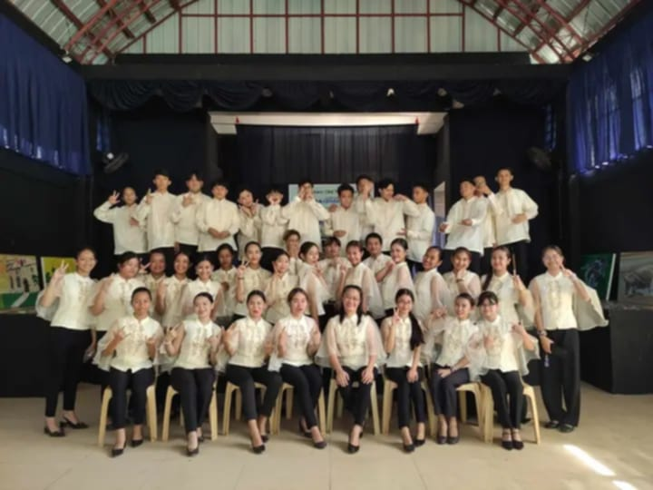
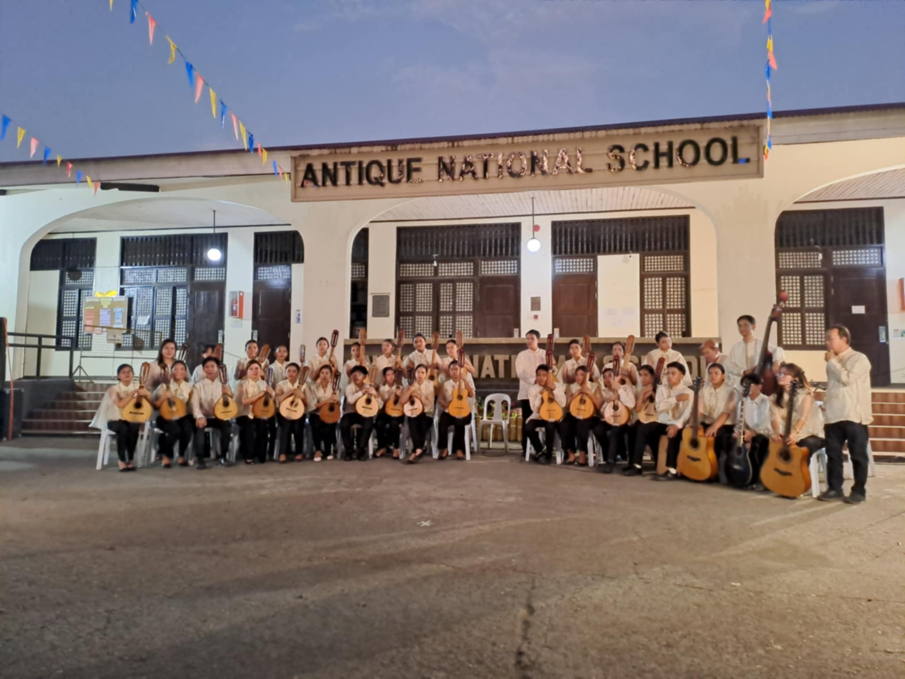
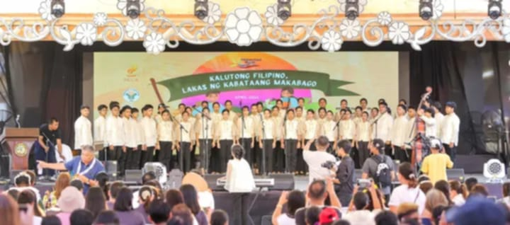
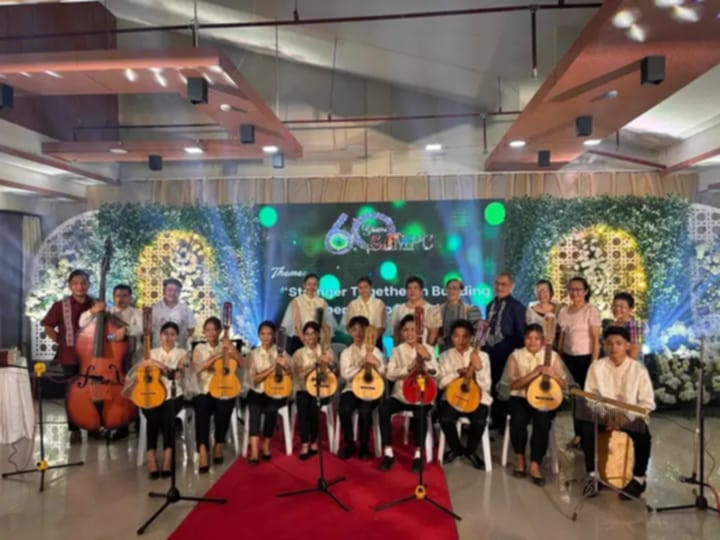
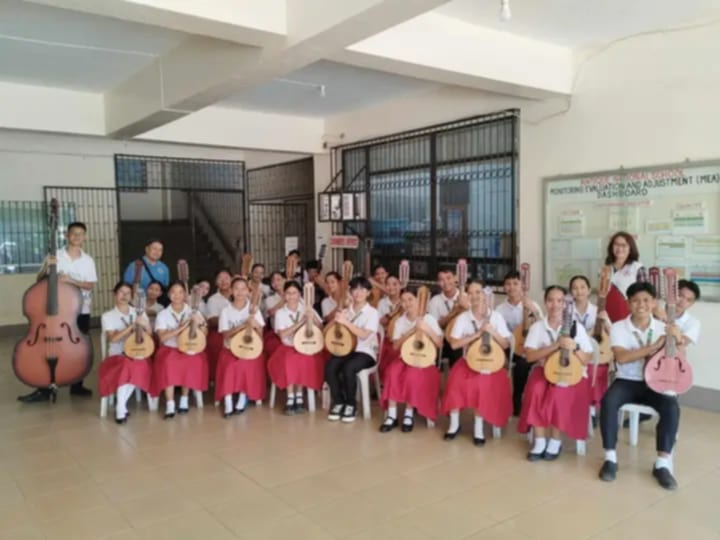
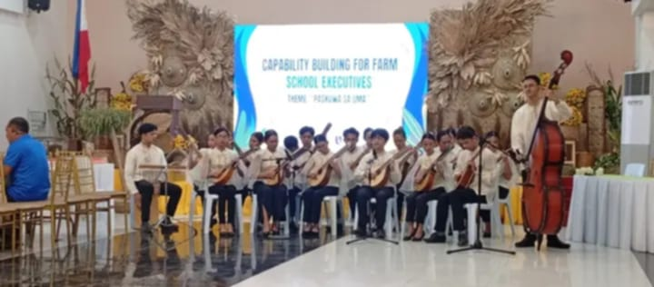
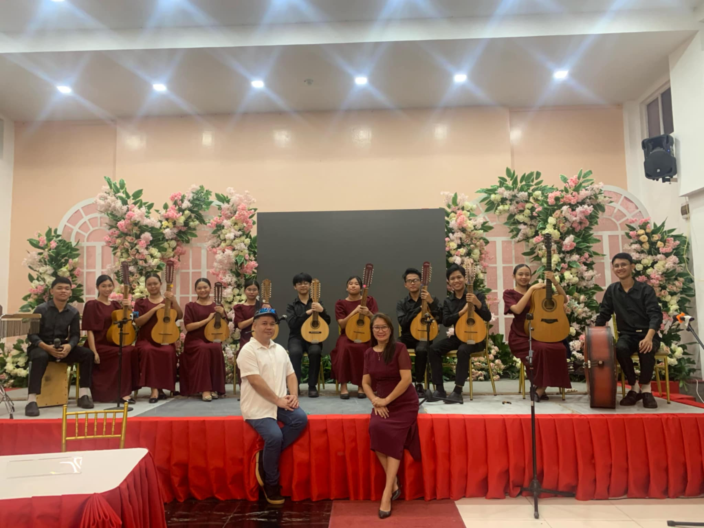
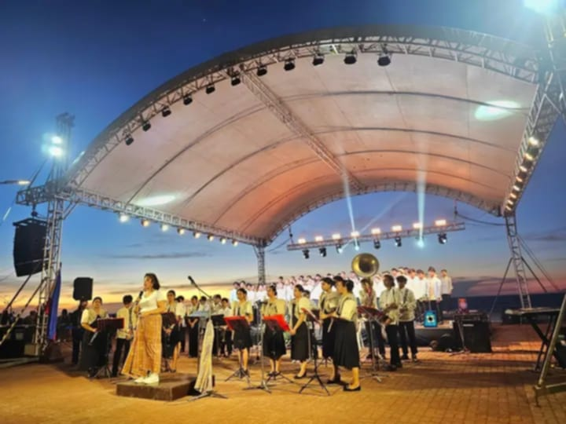

Home
Profile
Family
School Life
Specialization
MY WEBSITE
Specialization

I am a member of the ANS Rondalla and the ANS Harmonic Choir, with my main instrument being the Laud/Bandurria and my voice part as an Bass in the choir.

Rondalla Workshop, Mini Recital.

NCAA Performance

Hotel Kinaray-a Performance, Coop. Organization.

Welcoming of Oton & Passi, Department Officials.

Paskwa sa Uma, Farm School.

Valentines Day Performance, Eagles's Hotel.

Konserto sa Antique Esplanade, By Loren Legarda.